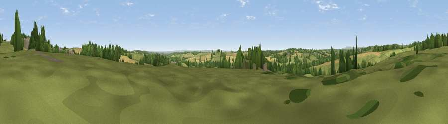

Viewpoint near Mugginton
#25495 in England · top 33% of its area beats it · near Mugginton · path 90 mWhere it is
The exact computed spot (SK 28525 43275). Click the marker for map links.
Public access: the nearest public right of way is about 90 m away — the final stretch may cross private land. Computed from Natural England's CRoW access layer and OpenStreetMap rights of way — not the legal definitive map. Always verify locally.
The view, rendered

A 360° render of this exact spot computed from the terrain model, tree cover and land cover — summer colours, afternoon light, calibrated against photographs of famous viewpoints. Real trees, hedges and buildings will differ in detail.
The panorama
Grey silhouette: terrain skyline in each direction (720 bearings, Earth curvature and refraction included). Dashed green: skyline with trees (+15 m) and buildings (+8 m) as obstacles. Blue strip: how far the ground is visible on each bearing.
Where the view opens
Wedge length = distance to the farthest visible ground on that bearing (vegetation-aware). Rings at 10, 25 and 50 km.
What fills the view
58% grassland · 22% cropland · 17% woodland · 3% built-up
Angular shares of the visible panorama (visual magnitude), not map area. Landscape diversity 0.46 (0–1 Shannon).
Key numbers
More beautiful places nearby
The staircase of upgrades: each row has a higher view potential than everything closer. Driving times are estimates from straight-line distance, calibrated against real road routing — check an actual route before setting out.
| Place | Direction | Drive | Score |
|---|---|---|---|
| Viewpoint near Mugginton | NNW · 2 km | ~4 min | 46.3 |
| Viewpoint near Windley | ENE · 2 km | ~5 min | 58.6 |
| Viewpoint near Hazelwood | ENE · 6 km | ~12 min | 63.1 |
| Firestone Hill | ENE · 6 km | ~13 min | 64.6 |
| Alport Height | NNE · 9 km | ~17 min | 73.9 |
| Tissington Hill | NW · 16 km | ~29 min | 75.5 |
| Viewpoint near Stanton under Bardon | SSE · 35 km | ~53 min | 76.0 |
| Viewpoint near Woodhouse Eaves | SE · 36 km | ~55 min | 77.7 |
52.98606, -1.57655 · source: screening · position refined by local search. Computed location — check access rights before visiting.